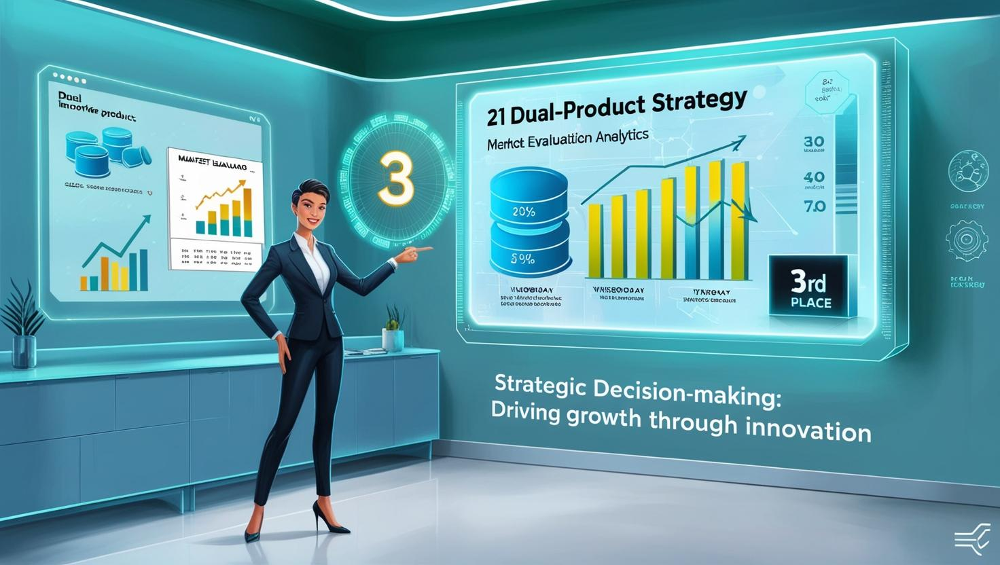

Resume
Resume
Seasoned Data Analyst with a strong background in engineering management, data analytics, and machine learning. Proven expertise in statistical analysis, predictive modeling, and business intelligence to drive data-driven decision-making. Skilled in Python, SQL, R, and frameworks like TensorFlow and Django, with experience optimizing business strategies through analytics. Passionate about leveraging data to solve complex problems and enhance operational efficiency.
Professional Experience
July 2020 - July 2022
Business Development Manager
Skill-Lync, Hyderabad, IndiaSkill-Lync delivers quality education by leveraging technology to equip students with the technical skillset they require, to start and succeed in their respective career paths.
- Utilized advanced data analytics tools (SQL, Power BI, Excel) to extract actionable insights, enabling the achievement of term goals and a consistent 500K revenue increase per term.
- Streamlined team collaboration using GIT, Jira, and TerraFlow to automate workflows, improve performance tracking, and optimize data pipelines, driving faster decision-making and boosting operational efficiency.
- Developed and deployed predictive models for customer segmentation, utilizing machine learning techniques to drive a 50% increase in sales growth per term by enhancing targeted marketing strategies.
- Analyzed and visualized performance metrics for a team of 30 Junior Executives, applying data-driven insights to adjust workflows and optimize resource allocation, leading to a 25% monthly revenue growth.
- Engineered custom Algorithms based on customer segmentation and behavioral data, improving product delivery strategies and elevating customer satisfaction from 78% to 94%.
- Partnered with marketing, product, and CRM teams to implement data-driven strategies, enhancing product competitiveness and customer engagement. Leveraged A/B testing frameworks to continuously monitor and optimize marketing campaigns, boosting sales conversion rates based on real-time customer interaction data.
- Utilized Jira for project tracking, enabling Agile methodologies within cross-functional teams to ensure efficient communication, task prioritization, and timely delivery of data-driven strategies and product improvements.
December 2018 - January 2021
Sales Management Intern
Royal EnfieldRoyal Enfield is an Indian multinational motorcycle manufacturing company, headquartered in Chennai.
- Utilized MS Excel and Word to streamline weekly reports on Domestic & Export Sales and Sub-contracting, enhancing reporting efficiency.
- Implemented resource allocation strategies using automation tools for seamless fund distribution, supporting growth across departments.
- Collaborated with cross-functional teams to analyze customer needs, optimizing product delivery and boosting sales by 30% while simultaneously leveraging data-driven solutions to achieve a 20% increase in revenue
Education
2022-2024
Master of Science
University of South FloridaGPA - 3.5
2016-2020
Bachelor of Technology
SRM Institute of Science and TechnologyGPA - 3.0
Projects
Projects
Below are the Academic projects on Data Analysis, SQL, Python, Power BI, Finance, IOT, Capstone.
IOT Based IC Engine Water Pump Control for Smart Irrigation System
Deployed IoT sensors (soil moisture, temperature, humidity) across a 5-acre field using Arduino and Raspberry Pi, with Blynk for real-time monitoring and mobile control. Developed Python scripts for real-time data collection, processing, and analysis, storing sensor data in the cloud, and using PowerBI for actionable insights and visualizations. Automated irrigation control with Python-based algorithms that trigger pump operation based on soil moisture thresholds, optimizing water usage and reducing waste by 25%. Created a web dashboard with Flask for remote monitoring, integrated cloud storage for scalable data management, and used MQTT for reliable sensor-to-cloud synchronization, enhancing system efficiency. Analyzed music store data using advanced SQL queries to identify gaps and increase business growth.
Predicting Forest Fires: The Future of Forest Fire Fighting
Dynamic Financial Analysis for Strategic Investment Allocation
Utilized Excel (VLOOKUP, PivotTables, and Power Query) to analyze financial data from four Railway companies. Extracted and processed five years of Form-10K data using Python (Pandas) for enhanced analysis accuracy. Applied financial modeling techniques (ratio and trend analysis) to deliver data-driven investment insights. Used Power BI to visualize key metrics, providing clear, actionable strategic investment recommendations.

Capstone Project: Strategic Decision-Making through MOGUL CEO Simulation
Implemented strategic planning and various policy conception in technical organizations. Acquired practical insights by implementing weekly changes to drive organizational growth. Through dual-product strategy and market evaluation, achieved third place in the competition amongst the class.
0
Achievements
0
Projects
0
Cups of coffee
More projects on Github
Contact
Contact Me
Below are the details to reach out to me!
Address
12732 University Club Drive, Tampa, Florida